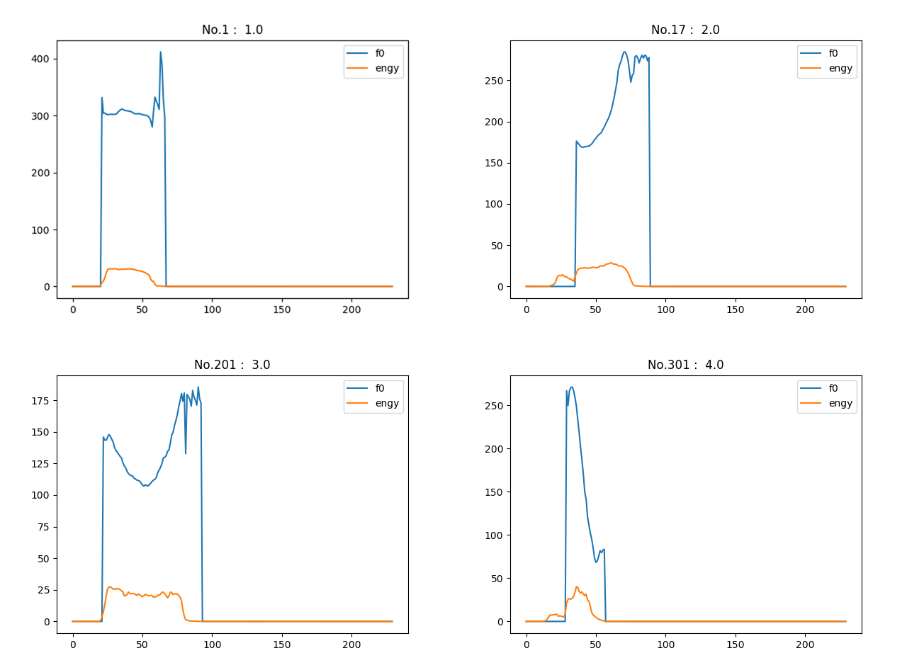
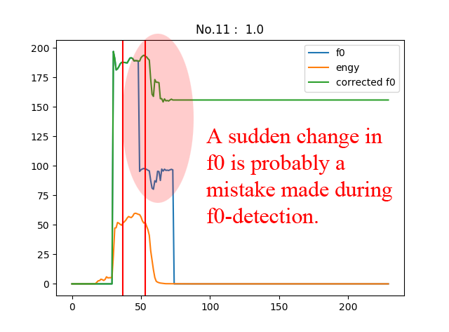
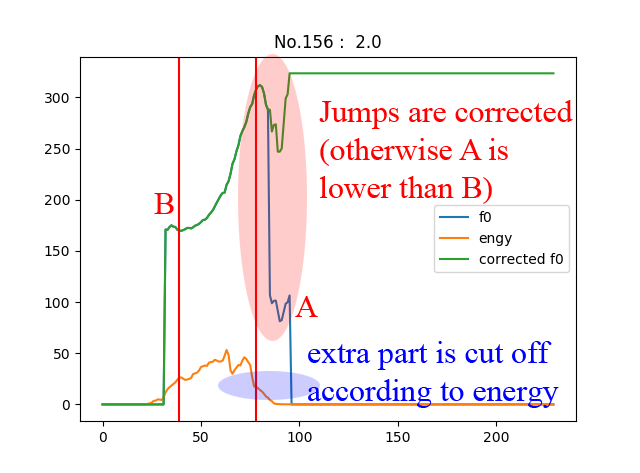
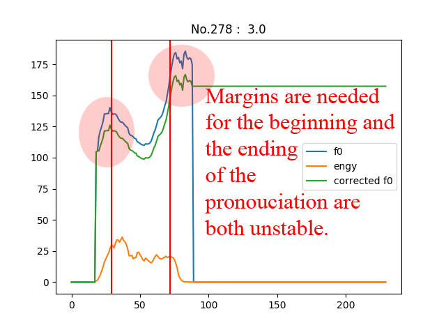

SpeechLab-Tone-Classification Report
littleRound lxy9843@sjtu.edu.cn Speechlab-xyl98
littleRound lxy9843@sjtu.edu.cn Speechlab-xyl98
Classify tones of single Chinese characters (different characters in different cases) by their f0/engy sequences.
train/ - training data dev/ - validation data test/ - difficult test data Each dir includes the f0 and engery features extracted from corresponding wav files. Each wav file is the pronunciation of a single Chinese character. Note that the length of different wav file may be different. Hence, the f0/engy files corresponding to different character may also have different length. But for the same character, the f0 file will have exactly the same length as the engy file. The naming convention for subdir and file name is as below: subdir name indicates the correct tone. filename pattern is {pron}{tone_lable}.f0 {pron}{tone_lable}.engy where pron is the pronunciation of the character and tone_lable is the tone of that character, i.e. 1, 2, 3 or 4. Please design a tone classifer with the f0/engy file as the input and output the tone label.
Notice: values have been scaled and have different units.

TONE 1 directly, but the case is relativily easier for the rest three. findValidRange]: [f0_th] [cut] [engy_th]correct_jump]: thresholdstupidJudge]: [up_thres] [down_thres] [turn_thres]findValidRange] Find valid duration of time for tone-classfication.f0 < [f0_th], say [f0_th] = 1, then in this period of time f0-detection is not working. The data is invalid.engy < [engy_th], then in this peroid of time there's hardly any sound. The data is invalid.correct_jump] Correct mistakes made in f0-detection.f0[i+1] / f0[i] > [threshold]) , scale all f0 after that point so that f0[i] = f0[i+1].stupidJudge] Classficationf0[begin]/m > 1 + [turn_thres] and f0[end]/m > 1 + [turn_thres]TONE 3f0[end]/f0[begin] > 1 + [up_thres]TONE 2f0[end]/f0[begin] < 1 + [down_thres]TONE 4TONE 1


Every time after I updated my parameters, I run a script that outputs the accuracy rate along with specific detailed diagrams showing which case is predicted incorrectly in training set. After observing why mistakes happened I'm able to get the intuition needed for tunning all parameters or new method to process data.
/